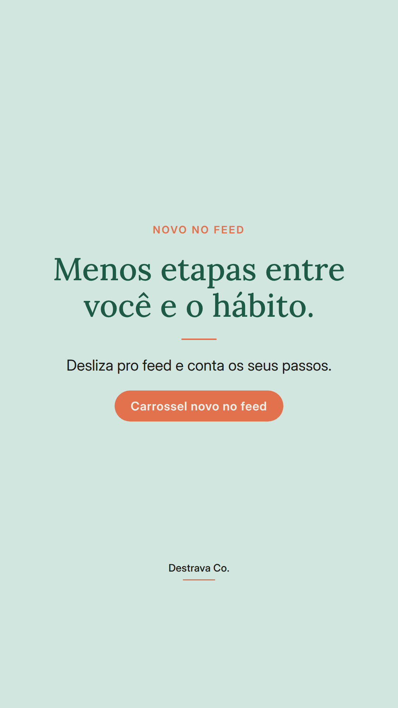
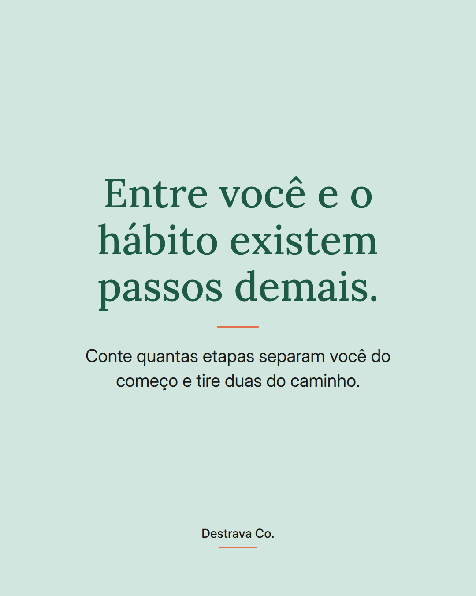
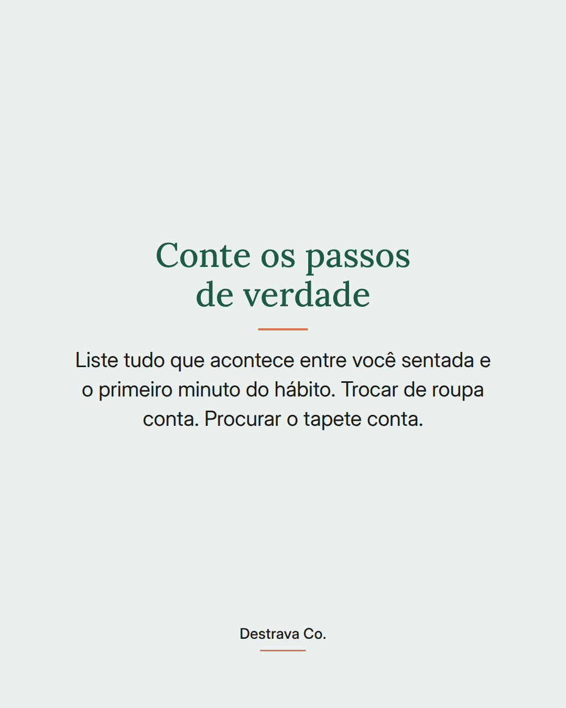
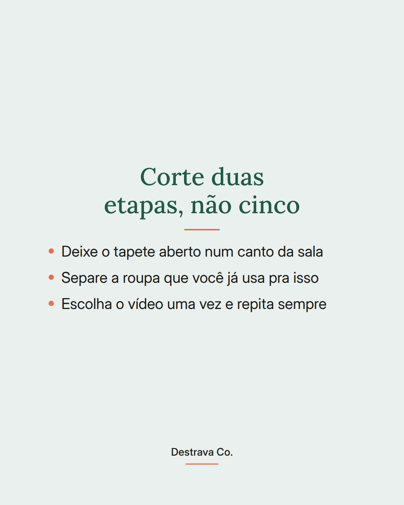
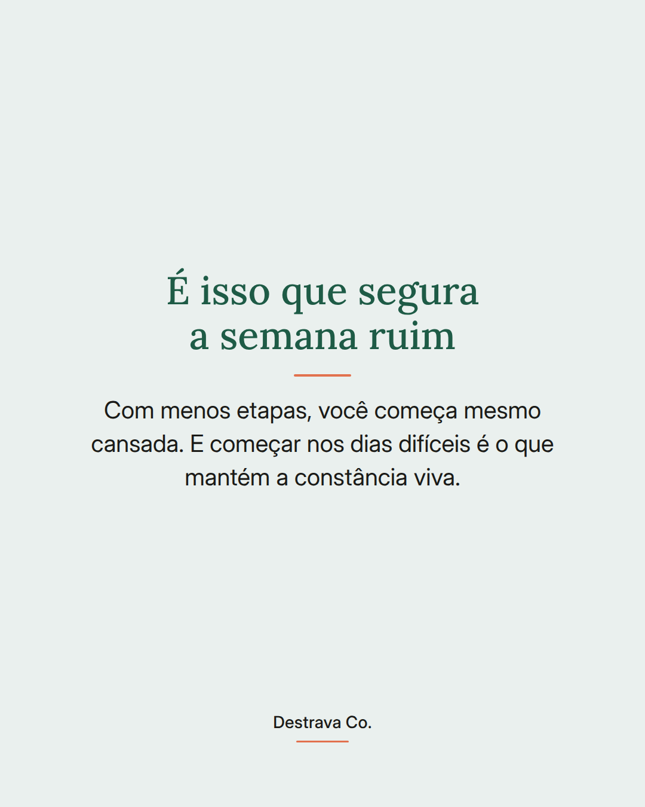

Hábito que você adia não é falta de vontade: é etapa demais antes do começo.
Na rotina corrida, cada decisão extra vira um motivo pra deixar pra amanhã.
Faz um teste hoje: escreva tudo que acontece entre você sentada e o hábito acontecendo. Procurar a roupa, achar o tapete, escolher o vídeo, liberar o canto da sala. Cada item desses é um convite pra desistir.
Escolha dois e resolva de uma vez só. Tapete aberto, roupa separada, vídeo já definido. Quando o caminho encurta, você consegue começar até nos dias bagunçados, e é isso que mantém a constância de pé.
Salva pra fazer essa conta ainda hoje e compartilha com uma amiga que vive recomeçando. Se quiser companhia pra organizar isso com calma, o Destrava 21 te guia pelo método D.R.A.